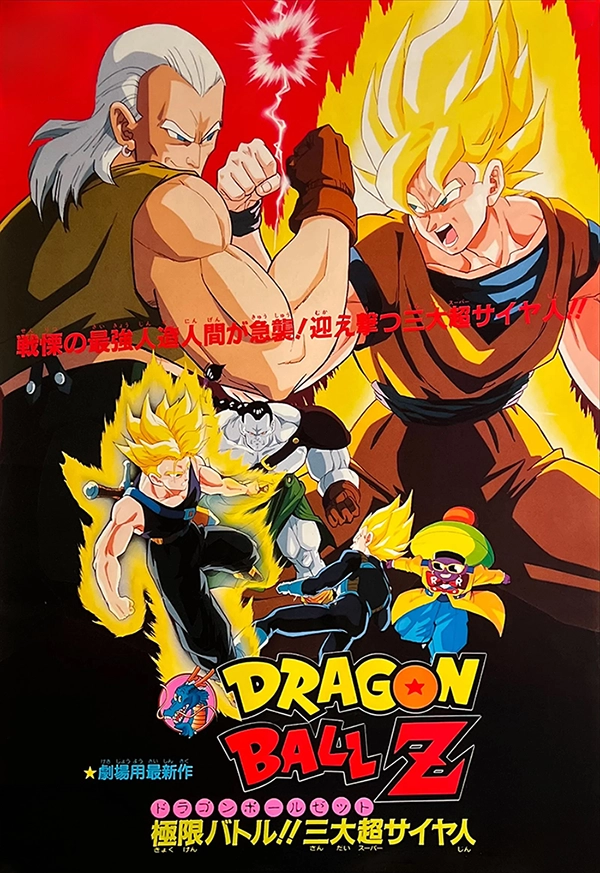
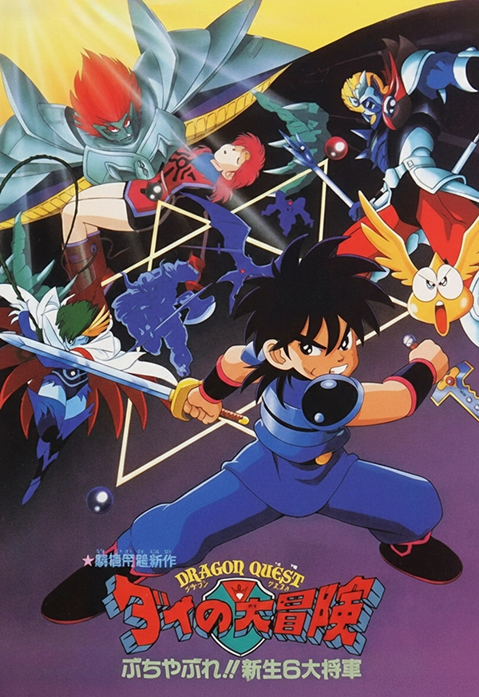

TOEI ANIME FAIR
- Verano 1992 -
Fecha y Hora
17 - 19 de Julio
10:00 - 22:00 hrs
Lugar
Marunouchi TOEI
3-2-17 Ginza, Chuo-city,
Tokyo, 104-8108
Bienvenidos!!
El Festival de Toei es el punto de encuentro definitivo para fans de todas las edades, ofreciendo una experiencia inmersiva en el vasto universo de Toei Animation a través de tres ejes principales: proyecciones de nuevos estrenos, encuentros en vivo con actores de voz y personal de producción, y zonas interactivas que incluyen galerías de arte conceptual, merchandising y coleccionables exclusivos de los animes más importantes.
Bienvenidos!!
El Festival de Toei es el punto de encuentro definitivo para fans de todas las edades, ofreciendo una experiencia inmersiva en el vasto universo de Toei Animation a través de tres ejes principales: proyecciones de nuevos estrenos, encuentros en vivo con actores de voz y personal de producción, y zonas interactivas que incluyen galerías de arte conceptual, merchandising y coleccionables exclusivos de los animes más importantes.
Fecha y Hora
17 - 19 de Julio
10:00 - 22:00 hrs
Lugar
Marunouchi TOEI
3-2-17 Ginza, Chuo-city,
Tokyo, 104-8108
Los Estrenos Más Esperados del Verano 1992!!
Dragon Ball Z
Batalla Extrema!! Los 3 Grandes Super Saiyajines
Cuando el Dr. Gero murió asesinado por #17, el ordenador central no quedo desactivado, sino siguió trabajando. Este trabajo consistió en crear tres nuevos androides: #13, #14 y #15; con el único motivo de destruir a Son Goku...
Rokudenashi Blues

Rokudenashi Blues: La Película
La película sigue la vida de Taison Maeda, un joven delincuente con un corazón de oro y un talento innato para el boxeo. A través de sus luchas y relaciones, Taison busca redención y un propósito en la vida, enfrentándose a rivales en el ring y en las calles.
Dragon Quest
Descanso!! Los Nuevos 6 Grandes Generales
El Reino de Papunika se reconstruye con ayuda de sus habitantes y héroes. Hadler enfrenta dificultades tras la caída de Freizard, quedando solo tres generales. En ese contexto aparece Galvass, un demonio decidido a eliminar a Dai y sus compañeros.
Dragon Ball Z
Batalla Extrema!! Los 3 Grandes Super Saiyajines
Cuando el Dr. Gero murió asesinado por #17, el ordenador central no quedo desactivado, sino siguió trabajando. Este trabajo consistió en crear tres nuevos androides: #13, #14 y #15; con el único motivo de destruir a Son Goku...
Rokudenashi Blues
Rokudenashi Blues: La Película
La película sigue la vida de Taison Maeda, un joven delincuente con un corazón de oro y un talento innato para el boxeo. A través de sus luchas y relaciones, Taison busca redención y un propósito en la vida, enfrentándose a rivales tanto en el ring como en las calles.
Dragon Quest
Descanso!! Los Nuevos 6 Grandes Generales
El Reino de Papunika se reconstruye con ayuda de sus habitantes y héroes. Hadler enfrenta dificultades tras la caída de Freizard, quedando solo tres generales. En ese contexto aparece Galvass, un demonio decidido a eliminar a Dai y sus compañeros.
DRAGON BALL Z
PRÓXIMO VIERNES
17 DE JULIO!!
Nuevo tráiler Batalla Extrema!! Los 3 Grandes Super Saiyajines